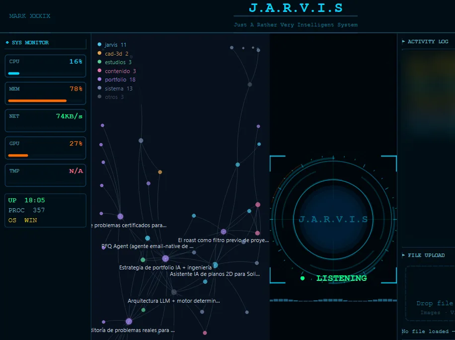

Case 04 · Personal project on an open-source base
I extended an open-source voice assistant until it became my working system
I started from MARK XXXIX-OR, a voice assistant for the desktop, and added local memory, email, calendar, coordination with coding agents and a mode that works offline.
14,335lines of my own Python in 45 new modules
566automated tests, no failures in the latest verification
~11,600lines in the original project I started from
Base: MARK XXXIX-OR by FatihMakes, open source: real-time voice with Gemini Live, a PyQt HUD interface and basic actions.
My contribution: 45 new modules, about 3,200 lines changed in original files and 60 test files. Measured by comparing file by file against the original. I implemented it by directing AI agents (Codex and Claude): I specify, decide and verify.
The problem
The original assistant could hold a conversation, run actions and had a basic memory, but it was not connected to my knowledge base, my email or my calendar, and it stopped working whenever the connection to the voice model dropped.
What I added
- Persistent local memory connected to my Markdown knowledge base, with an index, approved session memory and a view of the notes as a constellation based on their links.
- Gmail over IMAP and SMTP, with the policy of what is read and what is sent kept separate from the transport; an iCalendar calendar with reading, writing and a weekly view.
- A local bridge to coordinate Codex and Claude sessions from JARVIS, with scoped permissions.
- A local, deterministic command router so it keeps working when Gemini Live is unavailable.
- Declarative routines, a document index and 3D-print preparation in Bambu Studio.
Security decisions
- Notes are data, never instructions. A note cannot give the assistant orders or be deleted by an ambiguous command.
- Two-step confirmation for sensitive actions.
- Nothing physical starts on its own: 3D printing is prepared and opened with confirmation; printing itself remains manual.
- Local first: lower cost and useful features even when the external service fails.
Result

The latest verification, on 5 October 2026, passed all 566 tests twice with no failures.
Limitations and next step
- Spanish speech recognition has an improvement plan designed but not yet implemented.
- It is built for Windows and for the way I work; it is not a product for third parties.
Tools
- Python
- PyQt6
- SQLite
- Gemini Live
- IMAP / SMTP
- iCalendar
- Codex
- Claude Code
- pytest